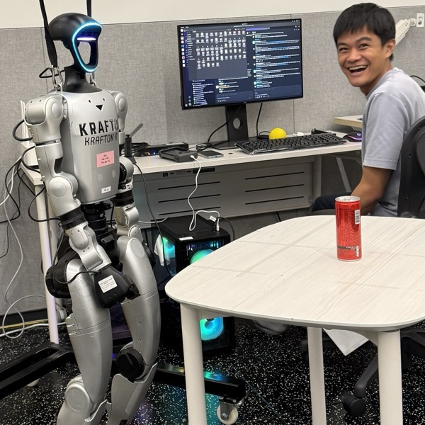

Tri Wahyu Guntara
Applied Research Engineer (RL), KRAFTON
I build reinforcement learning agents at KRAFTON — for games (PUBG and PUBG: Blindspot) and for physical AI, where I work on RL and vision-language-action models. Before that I did my master's at KAIST, advised by Kee-Eung Kim. My research interests sit where RL meets the messiness of the real world: representation learning under distraction, off-policy evaluation, and multi-agent policy optimization.
Education
2021.09 - 2024.08
M.S. in Artificial Intelligence,
Korea Advanced Institute of Science and Technology (KAIST)
(GPA 3.78/4.3, Advisor: Kee-Eung Kim)
Thesis: Information-Theoretic Distraction-Free Representation Learning for Visual Offline RL
Key courses: Deep Learning, Deep Reinforcement Learning, Advanced Topics in Deep
Reinforcement Learning, Bayesian Machine Learning, The Principles and Applications of the Kalman
Filter, Intelligent Robot Design Lab
2016.09 - 2020.08
B.Eng. in Electrical Engineering,
Universitas Indonesia
(GPA 3.86/4.0)
Experience
2026.07 - Present
Research Engineer,
Ludo Robotics
concurrent with the KRAFTON role
- Dispatched from KRAFTON to Ludo Robotics, a robotics spin-off of the company
2024.11 - Present
Applied Research Engineer (RL),
KRAFTON Inc.
Seoul, South Korea
2025.12 - Present
Physical AI Team
- RL agents and vision-language-action (VLA) models
2024.11 - 2025.11
Reinforcement Learning Team
- RL agents for PUBG and PUBG: Blindspot
2023.01 - 2024.08
Graduate Student Research Assistant,
Artificial Intelligence & Probabilistic Reasoning Lab, KAIST
South Korea
- Reinforcement learning and thesis project under the advisory of Prof. Kee-Eung Kim
2022.01 - 2022.12
Graduate Student Research Assistant,
Autonomous Vehicles and Embedded Systems Lab, KAIST
South Korea
- Self-driving car and reinforcement learning under the advisory of Prof. Seung-Hyun Kong
2019.06 - 2019.12
Research Scientist Intern,
Kata.ai
Indonesia
- Benchmarked models on Indonesian sequence labeling tasks (POS tagging, NER, SRL)
- Collected scattered Indonesian-English data and benchmarked models on neural machine translation
Publications
2026
-
C2ACPO: Agent-Chained Policy Optimization for Multi-Agent Reinforcement LearningReinforcement Learning Conference (RLC) 2026
2025
-
P1CLEAR: An Information-Theoretic Framework for Distraction-Free Representation Learning in Visual Offline RLPreprint
2024
-
C1Kernel Metric Learning for In-Sample Off-Policy Evaluation of Deterministic RL PoliciesICLR 2024
2020
-
W1Benchmarking Multidomain English-Indonesian Machine TranslationLREC Workshop on Building and Using Comparable Corpora (BUCC) 2020
Projects
-
CLEAR: Controllable Latent State Extractor for Visual Offline RL
-
PALAPA-707: An Autonomous VTOL Drone for the Indonesia Flying Robot Contest 2018
Scholarships & Awards
2021.09 - 2023.08
Hyundai Motor Chung Mong-Koo Global Scholarship
Full scholarship for the duration of the 2-year master's study at KAIST
2018.11
Indonesia Flying Robot Contest 2018 — Honorable Mention
Vertical take-off and landing (VTOL) category